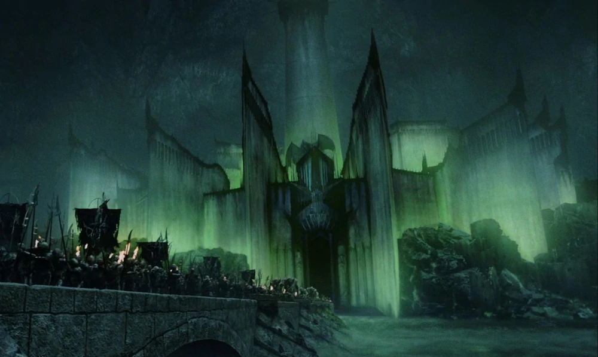
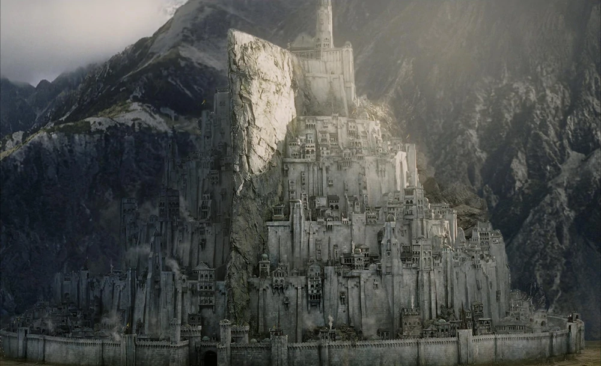

Gondor
- Minas Morgul
- Minas Tirith
- Osgiliath
- Dol Amroth
- Umbar
- Pelargir
- Tharbad
- Edhellond
Minas Morgul was once a fortress of Gondor, called Minas Ithil, the Tower of the Moon.
Minas Tirith, formerly and eventually again known as Minas Anor, was the capital city of Gondor.
Osgiliath was the first capital city of Gondor.
Dol Amroth was a feudal principality forming part of the Kingdom of Gondor in the southern reaches of that realm.
Umbar was a Mannish realm to the far south of Gondor in Middle-earth.
The great port of Gondor, Pelargir, was one of the earliest settlements of the Númenóreans founded in Middle-earth during the Second Age.
Tharbad was a fortified town on the river Greyflood, near the southern edge of Eriador in Middle-earth.
Edhellond was an ancient harbour in southern Gondor.